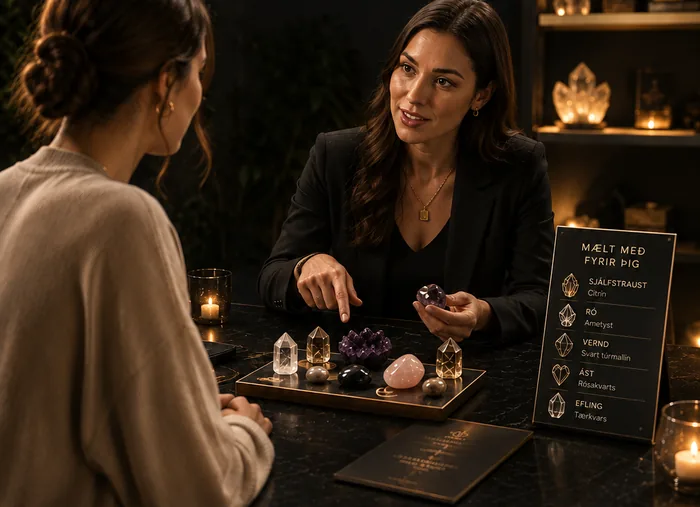

Kristalar fyrir líkama, huga og sál · Kelavegi 13
Kristallinn sem á við þig
Ert þú í leit að betri lífsgæðum, ákveðnum eiginleikum eða vilt ná markmiðum þínum? Við seljum kristala og bjóðum persónulega ráðgjöf. Þú sest niður með sérfræðingi, segir frá því sem þú leitar að — og ferð heim með kristal sem var valinn fyrir þig, ekki af handahófi.
Þú þarft ekki að vita neitt fyrirfram. Við leiðum þig í gegnum þetta.
- 01 Þú bókar tíma
- 02 Við finnum kristalinn saman
- 03 Þú ferð heim með hann
Hvað eru kristalar?
Fyrir mörgum eru kristalar kannski bara fallegir steinar — að okkar mati eru þeir svo miklu meira. Markmið okkar er að opna þennan heim og leyfa fleirum að kynnast honum á auðveldari hátt.
Kristalar eru steinar sem hafa myndast djúpt í jörðinni yfir langan tíma. Þeir eru fjölbreyttir og ólíkir og í gegnum tíðina hefur hverjum þeirra verið eignaðir ákveðnir eiginleikar, svo sem ró, einbeiting og kjarkur. Fólk notar þá oft sem áminningu – eitthvað áþreifanlegt til að halda á og tengja við það sem það vill ná fram, á meðan hugurinn vinnur sína vinnu.
Við lofum engum lækningum. Kristalar stuðla að andlegri rækt og vellíðan — ekkert umfram það.
Finndu kristalinn fyrir þig
Hvaða eiginleikum ert þú að leitast eftir í þínu lífi?
Þetta er aðeins brot af úrvalinu. Við hjá Kristölum.is eigum fjölbreytt úrval kristala með ólíka eiginleika — sumir eru tengdir ró og betri svefni, aðrir ást, og sumir jákvæðri orku eða sjálfstrausti. Kristalarnir fást í mismunandi stærðum og gerðum og verðið fer eftir stærð, svo allir geti fundið kristal sem hentar sér.

Ekki viss hvar þú átt að byrja?
Ert þú í erfiðleikum með svefnleysi eða átt við önnur vandamál að stríða í daglegu lífi? Viltu bæta svefninn og líða betur? Margir trúa því að kristalar búi yfir kröftum sem geta hjálpað til við slíka erfiðleika. Þess vegna réðum við kristalasérfræðing sem leiðbeinir hverjum og einum í átt að kristalnum sem hentar honum. Hinn rétti gæti verið nær en þú heldur.
-
1
Þú mætir til okkar
Þú kemur í verslunina og sest niður með kristalasérfræðingnum okkar í huggulegu herbergi.
-
2
Þú segir frá
Sérfræðingurinn byrjar á nokkrum almennum spurningum. Svo segir þú frá því sem liggur á þínu hjarta, markmiðum sem þú vilt ná eða eiginleikum sem þú ert í leit að.
-
3
Við finnum réttu kristalana
Sérfræðingurinn útskýrir hvaða kristalar myndu henta þér best og hvernig þeir virka.
-
4
Þú velur þína kristala
Að tímanum loknum getur þú gengið beint fram í verslunina og verslað þá kristala sem þér líst best á.
Tíminn fer fram í hlýlegu herbergi inn af versluninni. Það skiptir okkur máli að þér líði nógu vel til að segja frá — og að upplifunin sé róandi og gefandi.
Finndu þinn kristal og njóttu fríðinda. Ráðgjöfin sjálf er nokkuð kostnaðarsöm, en verslir þú kristal í búðinni beint eftir ráðgjöfina færðu afslátt af honum. Þú bókar tíma hér á síðunni eða með tölvupósti.
Það sem fylgir hverjum kristal
Upplýsingablað
Saga kristalsins, eiginleikar hans og hvernig á að nota hann svo hann skili sem mestum árangri — prentað og fylgir með heim.
Rafrænt skjal
Allar upplýsingar um kristalinn sendar í tölvupósti, svo þú getir lært meira um hann og hvernig hann nýtist þér í daglegu lífi.
Kristall sem er valinn
Ekki tilviljun. Fallega settur fram og valinn út frá því sem þú komst til okkar með.
Um okkur
Meira en bara kristalar
Við sérhæfum okkur í sölu á kristölum og persónulegri ráðgjöf fyrir fólk sem hefur áhuga á og/eða trúir á þann mátt sem kristalar bera. Ráðgjöfin er það sem aðgreinir okkur frá öðrum í kristalaheiminum: hún gerir ferlið persónulegra fyrir hvern og einn, og þannig viljum við byggja upp traustan og jákvæðan hóp viðskiptavina.
Þú þarft ekki að vita neitt um kristala áður en þú verslar hjá okkur. Þú getur aflað þér upplýsinga sjálf eða sjálfur hér á síðunni — og viltu kafa dýpra, þá ræðir þú við sérfræðinginn okkar. Við leggjum áherslu á að vera traust, fræðandi og opin.
„Við viljum ekki halda því fram að kristalarnir okkar geti læknað sjúkdóma eða neitt álíka, heldur stuðla þeir frekar að andlegri ræktun og vellíðan.“
Við stefnum á að skapa samfélag þar sem fólk getur verslað sér kristala en líka frætt sig um þann mátt sem þeir bera. Draumurinn er að hver einasti viðskiptavinur finni eitthvað sem hefur persónulega merkingu fyrir sig og upplifi jákvæða orku í gegnum ferlið — hvort sem hann er að kaupa sinn fyrsta kristal eða hefur safnað þeim árum saman.
Áður en þú bókar
Hvað kostar ráðgjöfin?
Ráðgjöfin er nokkuð kostnaðarsöm — hún tekur heila klukkustund af tíma sérfræðings. Verslir þú kristal í búðinni beint eftir ráðgjöfina færðu afslátt af honum. Verðið færðu uppgefið um leið og við höfum samband.
Hvernig bóka ég tíma í ráðgjöf?
Þú getur bókað tíma hér á síðunni eða sent okkur tölvupóst, og við höfum samband til að finna tíma sem hentar.
Hvað kosta kristalarnir?
Verðið fer eftir stærð og gerð — því stærri sem kristallinn er, því betri er hann talinn vera. Við viljum gera kristala aðgengilega fyrir alla og bjóðum þá því á mismunandi verði.
Þarf ég að kunna eitthvað fyrir?
Nei. Margir sem koma til okkar hafa aldrei átt kristal. Sérfræðingurinn byrjar á byrjuninni og útskýrir jafnóðum.
Virka kristalar?
Við höldum því ekki fram að kristalarnir lækni sjúkdóma eða komi í stað læknisþjónustu. Það sem við sjáum er að fólk sem á sér kristal með merkingu notar hann sem áminningu, og að það stuðlar að andlegri ræktun og vellíðan. Meira segjum við ekki.
Hvað fylgir kristalnum?
Prentað upplýsingablað um sögu kristalsins, eiginleika hans og notkun — og tölvupóstur með rafrænu skjali sem inniheldur sömu upplýsingar, svo þú getir flett upp í því síðar.
Þarf ég að bóka til að koma í búðina?
Nei, verslunin á Kelavegi 13 er opin virka daga 8–16 og allir velkomnir. Bókun þarf aðeins fyrir ráðgjafartímann sjálfan.
Bókaðu tíma hjá sérfræðingnum
Fylltu út formið og við höfum samband til að finna tíma sem hentar. Þú mátt líka senda okkur tölvupóst beint.
- Hvar
- Kelavegi 13
- Opið
- Virka daga 8–16
- Netfang
- radgjof@kristalar.is
- Lengd
- Um klukkustund í hlýlegu herbergi inn af versluninni.
- Verð
- Uppgefið þegar við höfum samband. Afsláttur af kristal sem þú verslar beint eftir ráðgjöfina.
Kelavegi 13 — opið virka daga 8–16
Þú þarft ekki að bóka til að kíkja við. Við höfum lagt áherslu á að hafa búðina eins hlýja og huggulega og mögulegt er, svo þér líði vel þegar þú kemur inn. Þjálfað starfsfólk okkar tekur vel á móti þér og hjálpar þér að finna það sem þú leitar að. Við vonum að þú kjósir að versla hjá okkur — því eins og slagorðið okkar segir: það sést hverjir nota kristala!